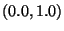
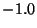
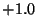

David T. O'Toole (dto@gnu.org)
This manual shows how to create audio plugins for GNU Octal in C or C++.
OCTAL is a GNU project (started in 1999) to create a free music system based on unit generator synthesis, sampling, and audio-plugin technology. It consists of:
The OCTAL project homepage (URL below) includes a more detailed overview, as well as current release code and documentation. There is also a mailing list called octal-dev.
Visit the OCTAL home page at http://www.gnu.org/software/octal
Tarball releases are periodically placed in ftp://ftp.gnu.org/gnu/octal. The latest development versions are available via CVS. The following commands will do an anonymous checkout:
cvs -d:pserver:anoncvs@subversions.gnu.org:/cvsroot/octal login cvs -z3 -d:pserver:anoncvs@subversions.gnu.org:/cvsroot/octal co octal
The included file DOC_COPYING contains the text of the license. If for some reason this file is missing, a copy of the license is available online at
http://www.gnu.org/copyleft/fdl.html
This chapter presents a quick run-through of how to set up communication between OCTAL and your plugin using the C programming language.
This section defines most of the important terms used in the rest of the document, focusing on those associated with new unit-generator based music systems like OCTAL.
#include "machine.h"
This file defines the structures and constants you'll need to interface with Octal.
This can be done very easily with C's enumerated type facility:
enum {ix_first_param, ix_second_param, ... }
The ix_ stands for ``index.'' It's just a convention that makes the meaning of the name more clear. You should name the constants in accordance with the parameter's use; for instance, the example delay machine uses ix_length and ix_feedback.
Octal needs some information about each of your machine's parameters. In particular, we need a name; what type of parameter it is; what kind of widget to use when opening a control box; a short description of the parameter that can be displayed to the user; and information about the acceptable ranges and default values for the parameter.
We can pack this information into a string with the following format:
|name|description|type|widget|minvalue|maxvalue|defaultvalue|Create a null-terminated array of strings, one for each parameter:
char *my_params[] = {
"|note|Which note to play|note|slider|0|128|0",
"|vol|Volume 0.0-1.0|generic|slider|0|1.0|0.6",
NULL
};
(Be sure to put the strings in the same order as the enumeration constants you set up earlier.) By describing them abstractly instead of in terms of graphics calls and windows, your machine can remain independent of GUI specifics.
For a catalog of parameter types and widgets you can
choose from, consult 3.3 (p.
 ).
).
OCTAL's machine_type structure holds information about the kind of machine you're making. As a machine developer, you'll need to fill in some of its fields. You'll need a long name (including the author's name), a short name (like ``delay'' or ``sampler''), the maximum number of channels (if any), and the address of the string array that describes your parameters.
You'll also need to tell Octal about your input and output channels. One and two are mono and stereo, respectively. Zero input channels would mean that your machine is a ``pure generator'' which does not accept any audio input.
Section 1.6.1 shows an example.
Your machine library will be called upon to do the processing for many machine instances. After all, the musician may want to create more than one delay machine, or more than one sampler machine, each doing its own thing and playing its own sequences.
OCTAL uses the machine structure to represent each machine instance, regardless of type. (The system keeps track of which type each machine instance has.) Since each machine type will need to store different kinds of data, we'll need to define a new structure type that is unique to the new machine type.
OCTAL calls these state objects. Each machine can have a state object associated with it. Struct machine has a void* member called state which you can use to store the address of a state object.
Some of this bookkeeping can be hidden using the included ox_wrappers. This is a C++ wrapper for the OX_API. Class and member function facilities hide the management of state objects completely. See this document's chapter on ox_wrappers.
Each octal machine library must export seven specially named callback functions. This section details when and how these functions are called by the host, as well as what to do (and what not to do) when this happens.
int ox_init(machine_type* t)
This function is called when your shared library is first loaded. OCTAL will pass you the address of a machine_type structure. You must fill in several fields with the appropriate data1.1. You may also perform any other one-time initialization tasks here, such as precomputing a large lookup table, loading a special configuration file, etcetera.
Here is a quick example of how to fill in the structure, taken from the example square wave generator machine included in the OCTAL distribution:
t->long_name = "David's Simple Squarewave Machine"; t->short_name = "dtosquare"; t->max_channels = 1; t->input_channels = 1; t->output_channels = 1; // give it the array of strings we declared above t->param_info = my_params;
void ox_create(machine* m)
When the user creates a new machine instance of your type, the host will call this function with the address of the new machine struct.
Your job during ox_create() is as follows is to set up the machine instance and get it ready to run.
If you're not using state objects, you can skip most of those steps. Your class constructor will be called by ox_wrappers.
Here's an example:
my_state *s;
...
do_something_with(s);
m->state = (void*)s;
The opposite of ox_create(). If you normally create a state object or allocate any memory buffers for a machine, now is the time to free that memory, and then free the state object itself. Be sure to use package::free(), the memory deallocation wrapper.
int ox_work(machine* m, int block_size)
This is where the actual work happens; hence the name. First, grab your state object by casting m->state to whatever pointer type you are using for your state objects.
my_state *s = (my_state*) m->state;
Your parameters will have been set during the host's call to ox_event(). The number of samples you should generate for this block is held in the block_size argument. Begin processing. Your input buffers will be arrays of type samp. m->lin and m->rin are the left and right input buffers1.3, while m->lout and m->rout are the output buffers.
There will also be an auxiliary input signal set, labeled xlin/xrin, for use in vocoding and other modulation tasks.
Return TRUE if you generated any sound; FALSE otherwise.
void ox_event(machine* m, int channel,
int which_param, param value)
Use this callback to respond to note events and parameter changes, altering the state of your machine as needed so that the next time your work function is called, the changes will have taken effect.
When a parameter's value changes, you'll be called with the channel number, parameter number, and new parameter value. Your channels are numbered from 0 to m->num_channels - 1. The parameter indices will match up with the ix_* constants you set up earlier. The value is a floating-point number in the range you specified for that parameter.
An effect machine can usually ignore the channel number. It is primarily meant to match up control changes in a pattern with the voice that should recieve them.
The value OX_NOTE_OFF is a special case for the note parameter type; it means that the note should stop playing on that channel.
You might want to change the state of your machine. For instance, when you recieve a OX_NOTE_OFF value for the note, you may need to update a variable somewhere that says ``I'm no longer playing any notes on channel .''1.4
Here is the ox_event() function taken from the example square-wave plugin:
void ox_event(machine* m, int channel,
int param_index, param value)
{
my_state *s = (my_state*)m->state;
package *core = m->pkg;
switch(param_index) {
case ix_note:
s->pitch = core->note2freq(value);
if (value = OX_NOTE_OFF) s->play = 0;
else s->play = 1;
break;
case ix_vol:
s->vol = ((float)value) / 255.0; /* scale to 1.0 */
break;
}
}
void ox_desc(char* dest, int which_param, param value)
The user needs to know something about how a machine interprets it parameter values. So, in addition to the simple naming and description of parameters discussed in 1.3, the OX_API supports ``live'' parameter feedback from the machines. When the musician tweaks a slider or spin button on your machine, Octal calls ox_desc()1.5 with the location of the buffer where you should write the string, the index number of the parameter being tweaked, and the new value. Your job is to make up a string describing the ``interpreted version'' of the new value; for instance, if the range  is interpreted as a percentage, the following code will write a string describing the new value into the location pointed to by dest. OCTAL might then display this string onscreen.
float x;
int percent;
...
switch(which_param) {
case ix_feedback:
percent = (int)(param_value*100.0);
sprintf(dest, "%d%%", percent);
break;
case ix_vol:
// describe volume
...
Note: It isn't safe to assume that the host's calls to ox_desc() will ``pair up'' with parameter changes. While this will often be true, sometimes there will be no connection between calls. For instance, to fill an option control with five or six options, OCTAL will query ox_desc() for each choice and retrieve a string to display for each item in the box.
You can use C's enum facility to create a set of unique indices, and then switch1.6 on the value passed to you during ox_desc(), in each case returning the string you would like to have appear in the interface. This indexing strategy is like the one used for parameters themselves.
[This section is not yet finished.]
void ox_channel(machine* m, int creating, int channel_number)
package *core = m->pkg;
Then you may call any package function through this handle. For instance, to convert a note value to a frequency in the current system tuning, use
float f = core->note2freq();
The following sections give the prototypes of other functions.
float note2freq (param n); float text2freq (const char *text); param text2note (const char *text); const char *note2text (param note);
int get_sr(void); // sampling rate
There are special restrictions on memory allocation for OCTAL machines. First, you may only allocate memory during ox_create and ox_channel. Second, you must use the provided wrappers for allocating memory rather than calling malloc and free directly. They wrappers reside in the OX_API package along with other utility functions:
void *alloc(size); void free(ptr);
As in the other examples, m is the pointer to your machine structure.
Using the -shared option to GCC, you can compile your C source file into a self-contained shared library (with the suffix *.so). Once this is done, OCTAL will be able to load and use your machine. Here's an example of a GNU make command that will properly compile your machine:
squaregen.so: squaregen.c machine.h
gcc -O3 -g -Wall -shared squaregen.c -o squaregen.so
OCTAL's build system will be able to automatically compile and install machines for the end user, so a distribution pack consisting of the machine source and documentation should suffice.
In a nutshell, your machine type is now a class; individual machines are now instances of that class. This lets you have data members, utility classes, and all the interesting features of C++ at your disposal to create machines.
ox_wrappers.h declares a base class called OX_Machine, from which you'll derive a new class that implements your machine. Here is its definition:
// class OX_Machine just defines the interface to keep things
// consistent. none of its member functions will ever be called,
// because calls to the derived class will all be statically bound
class OX_Machine {
public:
OX_Machine(machine* m) {};
~OX_Machine() {};
static int initialize(machine_type* t) {};
static void describe(char* dest, int which, param value) {};
void event(int channel, int which, param value) {};
int work(int block_size) {};
int channel(int creating, int channel_number) {};
// you typically won't need to access this next field from C++
machine* m;
// package functions and i/o buffers
package* core;
samp *lin, *rin, *lout, *rout;
};
It's not hard to see that the member functions are just like the ox_* callbacks, but with the ``machine*'' pointer removed from the argument lists.2.1 ox_create and ox_destroy are now the constructor2.2 and destructor, respectively.
The frequently-accessed i/o buffer pointers rin, lin, lout, rout are members of the class, so they can be accessed in member functions without any explicit dereferencing.
Instead of state objects, you can simply add data members to your derived class.
Now is the slightly weird part. Step one: define the macro OX_CLASS to be the name of your new derived class. If your class is called MyCoolDelay, then
#define OX_CLASS MyCoolDelay
It's important to do this before you include any ox_wrappers header files. The reason is that new functions, making statically-bound calls to your new member functions, are going to be created when you compile.
Next, derive your class from OX_Machine and place its declaration in, say, MyCoolDelay.h Then do the following:
#define OX_CLASS MyCoolDelay #include ``ox_wrappers.h'' #include ``MyCoolDelay.h'' #include ``ox_wrappers.cc''
Now implement your member functions, and compile as a shared object. The wrapper will export the required OX_API functions with C linkage, so that OCTAL will be able to find them. When OCTAL calls them, ox_wrappers will forward the relevant info on to your machine.
You'll still have to use some C structures such as machine_type when communicating with OCTAL. Your class inherits a data member m, which is a pointer to the underlying struct machine object that OCTAL is dealing with directly.
All the information in 1.3, 1.4, and 1.9 applies to use of ox_wrappers. You might need to override the new and delete operators so that they call the OX_API wrappers.
[This chapter is not yet complete.]
A signed floating-point data type for processing samples. OCTAL plugin audio streams must be in this format. Audio data should be scaled from  to . (The range for control data sent through AUX connections is user-defined.)
An floating-point type for storing event data. OCTAL patterns are stored in this format. See the section on ox_event() for more information.
[Not yet finished.]
| type | meaning | example |
| note | a musical note | C-4, D#2, B-5 |
| velocity | the pressure on a given note | 0-128 |
| trigger | one-off event trigger | 0, 1 |
| wave | a raw sound from the wavetable | 3C, 05 |
| widget name | description |
| slider | a small slider bar with a handle |
| and displayed numeric value | |
| entry | a numeric entry box with ``enter'' button |
| button | a trigger button |
| spin | spin button |
| option | pulldown box with named options |
int ox_init(machine_type* t)
void ox_create(machine* m)
int ox_destroy(machine* m)
void ox_work(machine* m, int block_size)
void ox_event(machine* m, int channel,
int which_param, param newvalue)
void ox_desc(char* dest, int which, param value)
void ox_channel(machine* m, int creating,
int channel_number)
This document was generated using the LaTeX2HTML translator Version 99.2beta5 (1.38)
Copyright © 1993, 1994, 1995, 1996,
Nikos Drakos,
Computer Based Learning Unit, University of Leeds.
Copyright © 1997, 1998, 1999,
Ross Moore,
Mathematics Department, Macquarie University, Sydney.
The command line arguments were:
latex2html -split 0 ox_api_main.tex
The translation was initiated by David O'Toole on 2001-04-07